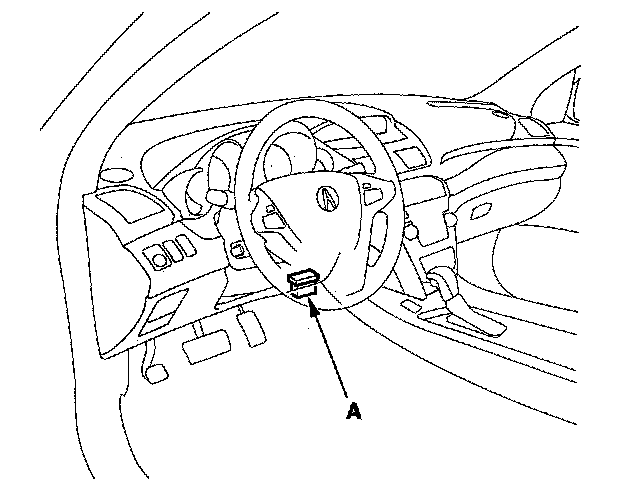

How to Substitute the PCM
How to Substitute the PCM1. Make sure you have the anti-theft codes for the audio system and the navigation system (if equipped).
2. Turn the ignition switch OFF.
3. Connect the HDS to the DLC (A).

4. Turn the ignition switch ON (II).
5. Make sure the HDS communicates with the PCM. If it doesn't, go to the DLC circuit troubleshooting. If you are returning from the DLC circuit troubleshooting, skip steps 5 to 6, and clean the throttle body after substituting the PCM.
6. Select the INSPECTION MENU with the HDS.
7. Select the ETCS TEST, then select the TP POSITION CHECK, and follow the HDS screen prompts.
NOTE: If the TP POSITION CHECK indicates FAILED, continue this procedure.
8. Turn the ignition switch OFF.
9. Disconnect the negative cable from the battery, then disconnect the positive cable.
10. Remove the bracket (E), then free the A/C discharge line from the clip (F). Remove the A/C suction line mounting bracket bolt (G).
11. Remove the PCM cover (D), disconnect PCM connectors A, B, and C, and remove the mounting bolts, then remove the PCM.
12. Install the PCM and battery cables in the reverse order of removal.
13. Turn the ignition switch ON (II).
NOTE: If DTC P0630 "VIN not Programmed or Mismatch" will be stored because the VIN has not been programmed into the PCM; ignore it, and continue this procedure.
14. Manually input the VIN to the PCM with the HDS.
15. Update the PCM if it does not have the latest software.
16. Select the IMMOBI SYSTEM with the HDS.
17. Enter the immobilizer code using the PCM replacement procedure in the HDS; this allows you to start the engine.
18. Reset the PCM with the HDS.
19. Select the ETCS TEST, then select the TP POSITION CHECK, and follow the HDS screen prompts. If the TP POSITION CHECK failed, clean the throttle body.
20. Do the PCM idle learn procedure.
21. Do the CKP learn procedure.
22. Enter the anti-theft codes for the audio system and the navigation system (if equipped). Set the clock.
23. Do the steering column position memorization.
24. Do the power window control unit reset procedure.